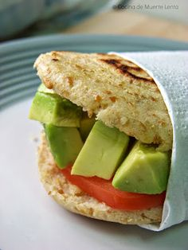
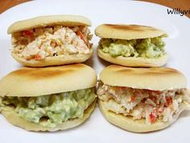
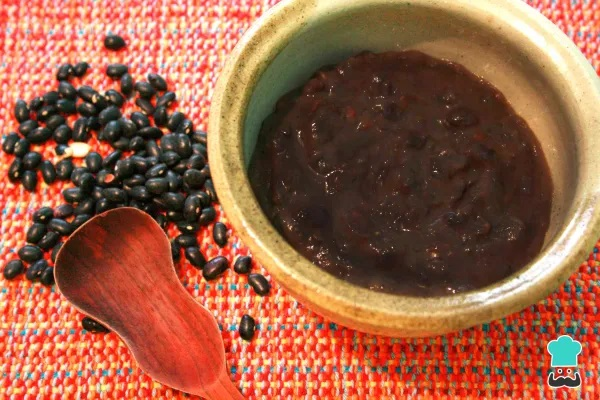

Sabor Vegetal
Deliciosas arepas sin carne, llenas de frescura y sabor.

Arepa rellena con aguacate
Rellena de delicioso aguacate, cebolla, tomate y un toque de crema de aguacate. Ideal para los amantes de los sabores intensos y naturales.

Arepa rellena de Queso y Espinacas o con ensalada
Combina la suavidad del queso con el frescor de las espinacas. o una rica arepa de harina de trigo rellena con ensalada. Una alternativa nutritiva y sabrosa, perfecta a cualquier hora.

Arepa andina rellena de Frijoles Negros
Con frijoles negros sazonados y un toque de salsa picante, esta arepa es ideal para una comida completa y satisfactoria.